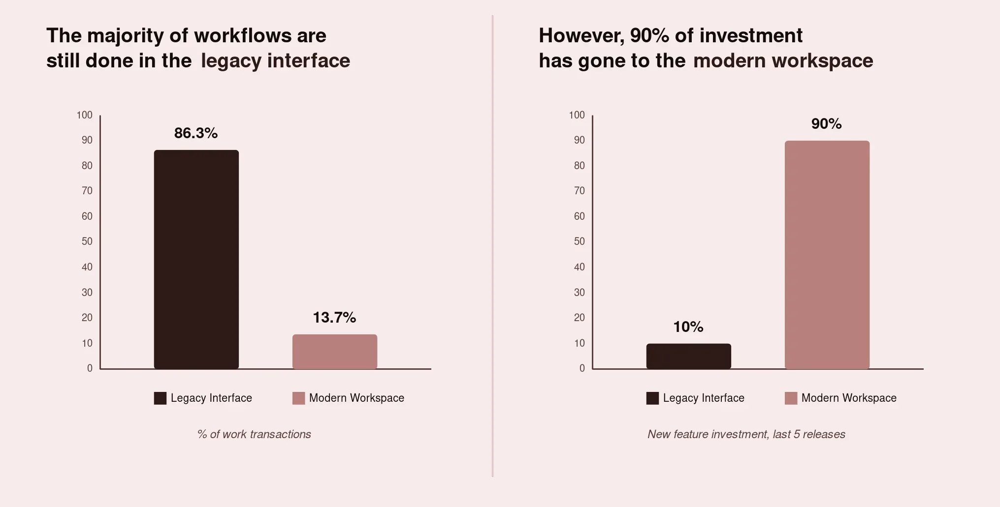
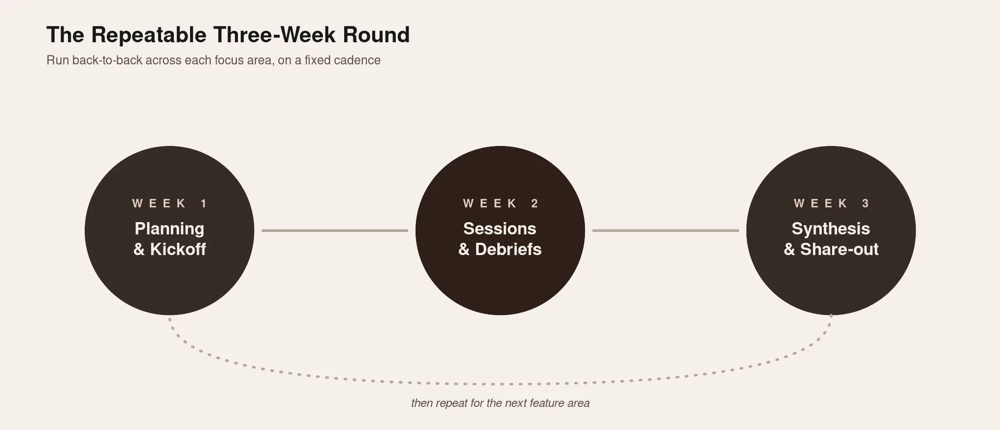
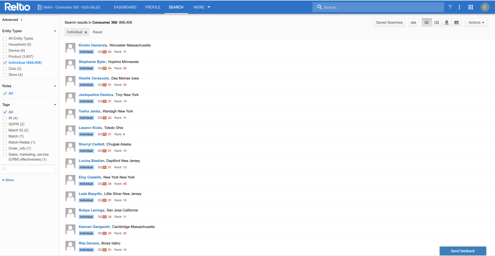

Leadership adopted a ranked “Adoption Contract” as binding roadmap gates, sequencing migration tooling ahead of new AI features.
↗ Adoption Contract adopted as binding roadmap gates↗ Migration tooling sequenced ahead of new AI features
Sr. UX Researcher — Enterprise & B2B Software
I’m a Sr. UX Researcher with 5+ years in enterprise and B2B software. I study how people actually work, then turn mixed-methods research into roadmap decisions — without cutting corners on rigor.

From surveys and fieldwork to concept and usability testing, I build the evidence teams need to decide what to build next — and what to leave out.
Six case studies from enterprise and B2B software — each with its methods, findings, and what changed.
Leadership adopted a ranked “Adoption Contract” as binding roadmap gates, sequencing migration tooling ahead of new AI features.

Reframed the roadmap around ease-of-use, not migration pressure.

Findings shaped which AI Processing and Citation patterns shipped into the design system.

Compressed a two-release-cycle research process into one, speeding time-to-market for shared roadmap features.

To understand how Bulk Actions was currently being leveraged by end users.

Goal of this study was to evaluate the usability, user experience, user responses, expectations and preferences for Data Validation.
Outcomes from the case studies above, in my own numbers.
Numbers that tell my story
It is my absolute pleasure to recommend Sagarika, an exceptional UX researcher whom I had the privilege of working alongside at ServiceNow. Sagarika possesses a rare and powerful skill set: the ability to seamlessly bridge the gap between high-level business strategy and deep user empathy. She does not just identify and address complex stakeholder needs, she actively transforms vague, complex business challenges into thorough, highly measurable, and actionable research outputs. Her recent impact speaks volumes. The past six months alone have been a masterclass in execution, filled with impressive mixed-methods research that drove critical product insights. This is, of course, a continuation of her stellar track record; Sagarika brings years of deep, thorough investigation into enterprise platform users, making her a true subject matter expert in navigating complex B2B ecosystems. Any product or research team would be incredibly fortunate to have her. Sagarika is a strategic thinker, a rigorous researcher, and a phenomenal collaborator who consistently elevates the quality of everything she touches.
It is my pleasure to recommend Sagarika, with whom I have worked closely over the past few years at ServiceNow. Her contributions to our team made a real impact. Sagarika is a true advocate for the customer and for doing the right level of due diligence, even when a faster answer is wanted. Her thoroughness in gathering research, and then interpreting and presenting the results, is unmatched. Her recent survey work with ServiceNow decision-makers on replatform considerations is a perfect example of this, but it was not the exception — it is simply how she works. She is steady, thoughtful, and quietly generous with what she knows, and a joy to work alongside. Any team would be fortunate to have her.
I am delighted to recommend Sagarika, with whom I worked at ServiceNow. Working with her has been one of the genuine pleasures of working at ServiceNow. Gentle in presence and fierce in conviction — a rare and wonderful combination — that is what makes her research insights so sharp and so actionable. Sagarika is a straight-talking, clear-sighted collaborator, and always approachable as a person. Any team would be lucky to work with her.
It is my pleasure to recommend Sagarika. She was among the first people who helped me make sense of ServiceNow when I joined, and she has been an invaluable partner in all the customisation work we did together. As a team, we built so much on her work, and she continued to create foundational knowledge for all of us through her mixed-methods research and pioneering work in customer visits and contextual enquiries. Any research or product team would be fortunate to have her as a partner.
Sagarika was the UX Researcher for the Search UI project. She is curious by nature and she set up meetings with me to ask questions while she was trying to understand the product. She was a great team player and is not afraid of speaking her mind when it’s in the interest of users.
Sagarika interned with my UX team in Summer and Fall 2020. I can’t praise her enough: she took on challenges with enthusiasm and reached out to make connections across the company even with challenge of starting the job remotely during lockdown. She’s extremely bright, understands the product/feature in discussion well, has a great ability to articulate her thoughts and is not afraid to voice her opinions. I was delighted to have her on my team.